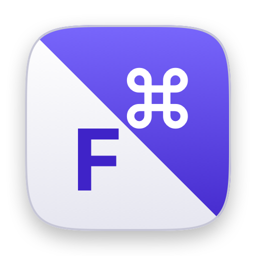

Every modifier under a finger that is already resting there — on your Mac's keyboard, and on the tablet you are driving it from.
Tap for the letter. Hold for the modifier.
Version 1.1.1 · macOS 13+ · free
Remote into your Mac from an iPad or an Android tablet over Jump Desktop and your whole desktop fits in a bag that weighs nothing. The catch is always the keyboard: Android will not send ⌘ or Esc at all, half of these folio cases have no trackpad, and nothing is where your hands expect it.
TapLayer fixes all of that from the Mac side — no firmware, no config file, no companion app on the tablet. And it works exactly the same on the MacBook's own keyboard, so you learn it once.
Android never forwards Command — ⌘Tab, ⌘C, ⌘Space are simply dead — and it claims Esc as its own Back button before Jump Desktop ever sees it. TapLayer returns both: Command lands on f and j, the tablet's Alt key is rewritten into Command, and Caps Lock — which Android does forward — becomes your Escape. Hold that same key and you get the mouse layer. iPadOS is less bad about this, but not by much.
Hold Esc and ijkl move the pointer with acceleration, f left-clicks, r right-clicks, y/h scroll, q/w go back and forward. Enough to actually run a Mac. If you carry a Smart Keyboard Folio or any of the countless cases and compact boards without a trackpad, you no longer need to pack a mouse as well.
Home row mods are normally a firmware feature, which rules out almost every folio case, tablet keyboard and cheap 60% on the market. TapLayer does the work on the Mac instead, so the keyboard does not have to cooperate — or even know.
Hold ` and the arrow keys become a scroll wheel — horizontal included, gathering speed the longer you hold. Long articles and long files go past without your hand leaving the keyboard, let alone finding a mouse.
Back at the desk, turn on Remap Local Keyboards and every one of those works on the MacBook's built-in keyboard too. The point is that your hands never leave the home row, whichever keyboard is in front of them.
They are good tools, and more configurable than this one. The catch is the layer they work at: they remap physical keyboards by seizing the HID device underneath, and keystrokes from a tablet never touch HID. Jump Desktop injects them further up, so kanata never sees them — and no amount of configuring changes that. TapLayer sits at the layer they actually arrive on.
| TapLayer | kanata | |
|---|---|---|
| Keys from an iPad or Android over Jump Desktop | works | never sees them |
| The Mac's own keyboards | works | works |
| What you install | one app | kanata, plus Karabiner's DriverKit virtual keyboard driver |
| Permissions to grant | Accessibility | a driver extension, Input Monitoring, and Accessibility — the last two through a foreground priming dance, because a root daemon cannot raise its own prompts |
| Runs as | you, one process | root, as a LaunchDaemon |
| Setup time | a minute | an afternoon, honestly |
| Custom keymaps | not yet — coming | yes, and it is genuinely good at it |
If you only ever type on the Mac's built-in keyboard and you want a fully custom layout, kanata is worth the afternoon. If you want home row mods to just be there, on whatever keyboard you happen to be holding, this is the smaller thing.
No network. No keystroke logging. There is no networking code in the app at all, so nothing can be uploaded even by accident, and the ability to record what you type is not compiled into this build. The log holds events — connections, layer changes, errors — never text, and you can open and read it yourself from the menu. Accessibility is the only permission it asks for: no root, no full disk access, no screen recording. Modifiers also stand down entirely whenever macOS signals a secure input field.
Fixed for now — one opinionated default set, nothing to configure and nothing to get wrong. Custom layouts are the next thing being built.
| a ; | Shift |
| s l | Control |
| d k | Option |
| f j | Command |
| i j k l | ↑ ← ↓ → |
| y h | Page up / page down |
| u o | Home / End |
| e n | Return / Escape |
| f g r c | / ? ' _ |
| number row | F1–F12 (- and = are F11 and F12) |
| i j k l | Move the pointer (accelerates while held) |
| f r | Left click / right click — double and triple clicks work |
| y h | Scroll up / down |
| q w | Browser back / forward |
| arrows, delete | Same thing, if your keyboard has the cluster |
| ↑ ↓ ← → | Scroll, horizontal included, accelerating while held |
| Option + tap Space | Delete the word behind the cursor |
| Caps Lock (Android) | Becomes Escape, since Android keeps the real one for Back — so tap it for Escape, hold it for the mouse layer |
| Alt (Android) | Becomes Command, automatically, for Android sessions only |
| Left Ctrl+Space+Esc | Kill switch — stops the engine from anywhere, including from the tablet |
It adds itself as a login item on first launch, so it is there after a reboot. Turn that off in the same menu. If you change your mind mid-sentence, the kill switch is Left Ctrl+Space+Esc — it works from the tablet too. Quit is always in the menu.
Fast typists roll their fingers across the home row, and a naive hold-for-modifier scheme turns that into garbage. TapLayer waits out a short hold, watches for the roll, and resolves the ambiguity before committing — so ordinary prose types normally.
Capitalising many words in a row is the one thing that still feels slower, since every capital waits out the hold. The real ⇧ keys are still right there at your pinkies.